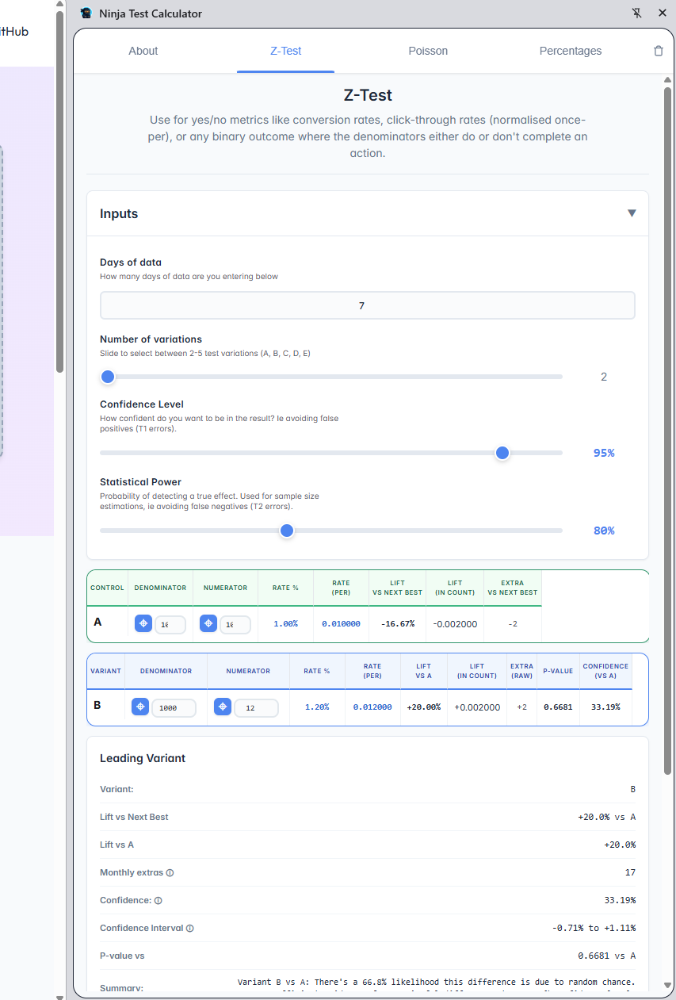

Statistical Significance
Made Simple
The layman-friendly A/B testing calculator. Start with your metric, not the math.
Choosing the right statistical test is crucial for accurate results. Ninja Test Calculator guides you to the correct method based on your data type.
